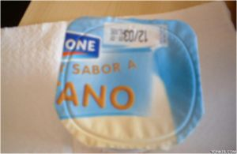
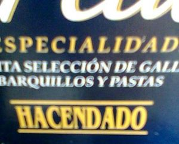
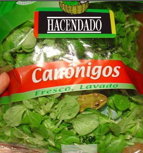
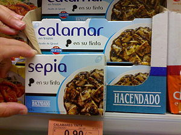

Hacendado
 De: La Frikipedia, la enciclopedia extremadamente seria.
De: La Frikipedia, la enciclopedia extremadamente seria.
 Danone es solo una diminuta partición de Hacendado. He aquí un ejemplo de sus productos.
También denominada "Hacendaño", son los productos creados por la multinacional Mercadona con el único fin de conquistar el mundo, fin que consiguió en el año 20013 tras la Primera guerra de Internet, perdiendo años después, la guerra contra skynet. Se rumorea que el ingrediente secreto está basado en la famosa fórmula de la circunferencia con la indiscutible presencia de vitaminas Pi y rizos de David Bisbalúltimas investigaciones informan de que posee potentes aditivos, letales para las neuronas y el gusto por la música el gran dictador Justin Bieber pretende crear un ejercito en comandanzia con One Direction aprovechando esto .
Su extensión mundial y su capacidad de pirateo y de crear fakes de miles de millones de productos alimenticios, ha llevado a la marca a ser un sucedáneo de ABSOLUTAMENTE TODO, lo que ha convertido a Hacendado en la multinacional con capacidad de tratar el Sucedáneo, elemento número 21 de la Tabla periódica, con mayor expansión en el mundo.
Se conoce que los primeros productos que llegaron a la Tierra de Hacendado eran provinientes del planeta homonimo. El elemento Hacendado es un producto altamente secreto, como el ingrediente secreto de la Gold-Cola(también conocido como chungo-cola). Los productos que llevan el ingrediente secreto X891Bz4-Pi, conocido en la Tierra como Hacendado, tienen un toque especial. Como si fueran tocados por el don y la gracia de Dios. También es conocido por que todos sus productos están hechos de suelas de zapatos, pañuelos usados y heces de mono, que son los que le dan ese saborcito ranció a los llogüres.
En el año 2020 se produjo un nuevo descubrimiento por parte del profesor frink ( simpsons ) el cual llego a la conclusion de que las pizzas campesinas contienen drogas y soja alemanas para someter nuestra voluntad al dios hacendado
 Esta marca está en cualquier parte (foto tomada a un contenedor de basura)

Yamcha después de probar un producto Hacendado
También se conoce a Hacendado como una raza de humanos que vive en Britania en un subterráneo gigantesco y que hacen dados de marfil para jugar al parchís.
Productos
 Sí, claro. Fresquííííísima.
Ligeramente alimenticios
Entre los ligeramente alimenticios, existen una gran cantidad que contienen nanomáquinas tales como:
- El turrón de chocolate de 0,99 leros
- La cola de 0,37, más barata que el agua mineral. (Rally Cola)
- Las Napolitanas de jamón y queso y de otros sabores.
- Las mousse de chocolate que, siendo iguales que las natillas, pero mas densas, cuestan la mitad.
- Los roscos de galleta cubiertos de chocolate blanco que mutaron de paquetes de 0,55 a paquetes de 1,15 euros.
- Los paquetes de cortezas, de apariencia similar a los boca-bits, pero con una textura y sabor completamente distintos. Sólo valen 0'37 €, por lo que son el producto ideal si no tienes pasta y quieres llevarte algo sin pagar y sin levantar sospechas.
- Las bebidas energéticas estilo Red Bull, compendio de alcaloides y demás tipos de droga para los yonquis más acuciados económicamente.
- Ensalada fresca, fresquísima a 0,99 leros
- La leche de vaca cisjordana asesinada mediante la Tecnica natural, que mutó de tetabricks de 0.55 a packs de 4 x 2.98 (y el euro de más se lo meten por el ...)
- El Vodka "Knebep", el ron "Almirante", el vino marca "Vino de mesa", el limón marca "limón", la ginebra "Sheraton", el wisky "Royal Swan", el ponche "Baco", el vermouth "Pratti"...todos productos aptos para el botellón del hombre humilde, sólo superados quizás por la leyenda urbana que habla de un Whisky llamado "Blonde House", de precio 2 Euros en tiendas 24 h.
- El vino de brick de la marca "Casón Histórico". Investigadores de una prestigiosa Universidad española dejaron constancia de sus benignos efectos en un acertado artículo científico, en el cual la conclusión final fue: "Casón Histórico y Hacendado es lo que me hace estar aquí sentado", como reza en la puerta de un inodoro de un aseo para hombres de dicha Universidad.
- Unos helados que hicieron para plagiar a calippo (los llaman sorbetes xD), unos helados llamados huellas (plagian frigo pie y no tienen ni un p*to dedo)
- Cereales que plagian a Kit-Kat (lo llaman rellenos de Chocholate digo, chocolate)
 Encuentra las 2 diferencias
Altamente alimenticios
Productos altamente alimenticios para el cuerpo humano, sea por su esctuctura interna, la posesión de elementos radioactivos, su estado o su certera exposición al público son los siguientes:
- El roscón de reyes criogenizado.
- Pizzas de cartón piedra (italiano, eso sí).
- Las crocretas de bolsas tamaño industrial.
- La fabada de bote insípida.
- La recopilación de dulces plagiando a Martínez de 3,30 el kilo.
- El ColaSpace, el colacao "con sabor de otra galaxia", sin duda alguna, sabe a harina y cuando se disuelve en la leche no tiene color, además está crujiente como una piedra.
- Barras de pan de gasolinera.
- Pan Bimbo de Hacendado con sabor a Pipas Americanas.
- Las ensaimadas plastificadas que no son las de repostería.
- La megatorta de pisto de 2 euros y medio y 4 toneladas de peso.
- Los conos de aperitivo que dicen ser de queso pero que saben a MERLUZA.
- La merluza que dice ser pescado pero sólo sabe a conos de aperitivo.
- El paté de hígado de cerdo en packs de 3 (ahora con abrefácil).
- El calamar y la sepia (en su tinta), que gracias a la foto del envase descubrimos que son el mismo animal.
- La cerveza Steinburg que contiene un 90% de agua, un 3% de arena, y un 7% de distintas sustancias no identificadas.
- La lima Hacendado, que tampoco es lima ni es nada, sino una dcuriosa anexión entre la lejía de las tiendas de los chinos y los maravillosos polvos Tang de dudoso limón. Indicada para botellones de Geeks, sobre todo si ésta no se diluye en aguarrás y se mezcla con vozka y otras sustancias alucinógenas.
- El desodorante Square 4 Men, que basicamente es Whisky "Blonde House" y una pizca de caspa de Maria Patiño todo ello metido en un tarro a mil 1353,27 pascuales.
- El queso azul único en mercadona en tarrinas de a kilo son capaces de no caducar, es más mejoran su sabor con el paso del tiempo en un 99% de las veces.
- El "Maxi York", barra de 2kg de fiambre de cerdo (46% cerdo) por menos de 4€. De hecho en Elche si pierdes cualquier parte de tu cuerpo en un accidente y te la tienen que reemplazar al instante lo harán con trozos de Maxi York (blandito, suave y muy fresquito). También existe el "Mini york" pero la proporción peso/precio/% de cerdo es mayor. El afamado chef Rubén ha hecho de esta materia prima su opción favorita a la hora de cocinar, creando unos estupendos medallones de haute cuisine junto con el sucedáneo de queso havarty de la marca Hacendado.
- Las patatas fritas con sabor a pollo asado que son más baratas que las patatas fritas clásicas, proximamente Patatas fritas con sabor a pollo asado sabor barbacoa.
Colaboraciones de Hacendado
Hacendado lleva ya 6 años suministrando productos a los marines, boinas verdes y legión española como consecuencia del acuerdo alcanzado entre estas fuerzas del orden y el hipermercado dentro del marco de enseñanza "Sobrevivir sin nada". Diversas autoridades de estos cuerpos han declarado que "todo aquel que sobrevive a la cola hacendado es capaz de beber de un embalse de agua estancada con larvas de mosquito tigre". Además, añaden que "al utilizar productos como los ambientadores hacendado han comprobado que no sólo mata a un elefante al contacto con una particula sino que también inutiliza los sistemas electrónicos durante 5 minutos".
Esta colaboración se basa en personajes como Steven Seagal, Rambo y otras autoridades asociadas a las patadas que aseguran "de pequeño yo tomaba dos, dos minisuisse de 1300 ml a 0,17 cada uno"
Véase también
- Eroski (resistencia "Anti-Hacendado").
Autor(es):
- Krusher
- Nexo
- Cortocircuito
- Haakjvork
- Gonzalicu
- Doctor grijander
- Nelor
- SPiNoZA
- Möe
- DrXoomG
Frikipedia 2005-2016, Licencia
GFDL 1.2 - Extraído por FrikiLeaks